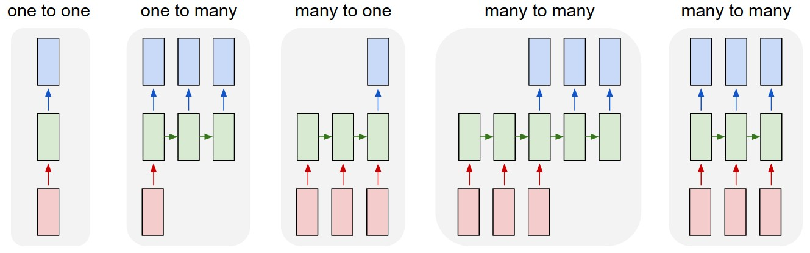
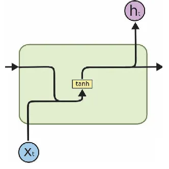
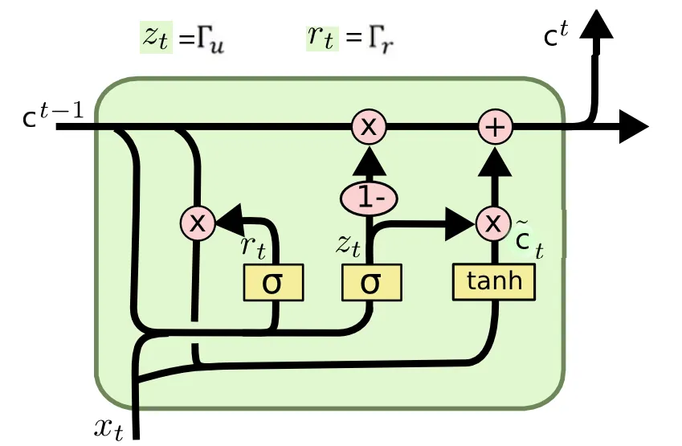
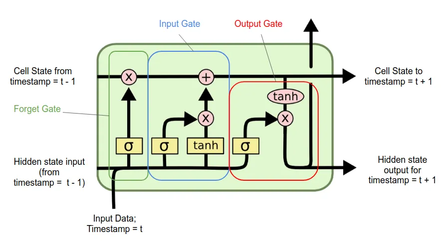
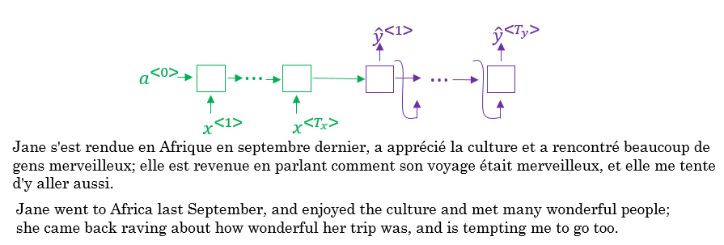
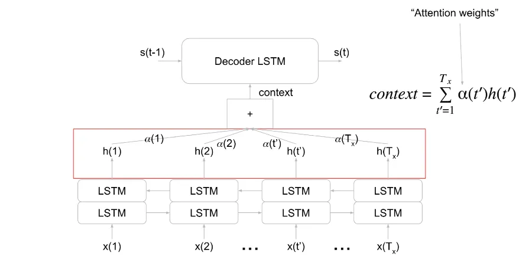
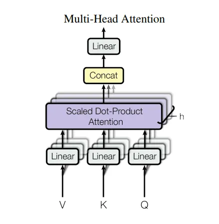
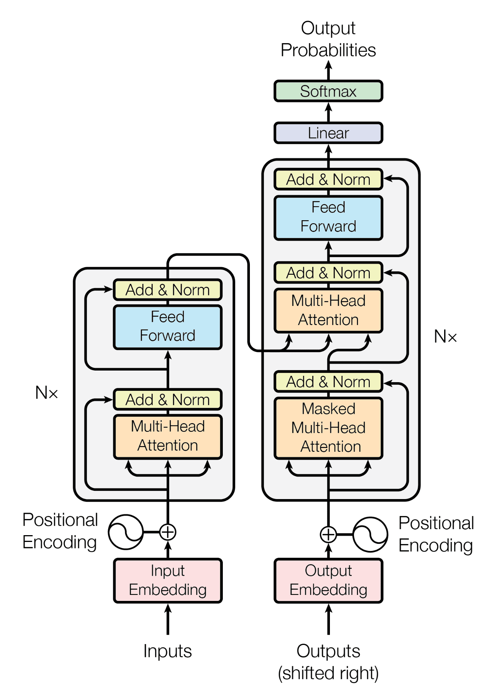
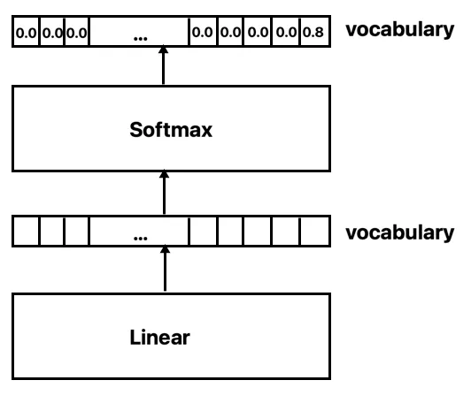

21 Sequence Models
Word embeddings (Figure 20.1) give us a fixed vector per token, but most NLP tasks operate over sequences of tokens — sentences, documents, dialogues — of variable length, where order and long-range dependencies matter. This chapter covers the two dominant families of architectures for modeling sequences: Recurrent Neural Networks (RNNs), which process tokens one at a time while maintaining a hidden state, and the Transformer, which processes the entire sequence in parallel via self-attention and underlies virtually all modern large language models.
21.1 Recurrent Neural Networks
An RNN maps an input sequence \(x = (x^{<1>}, x^{<2>}, \dots, x^{<T_x>})\) to an output sequence \(y = (y^{<1>}, y^{<2>}, \dots, y^{<T_y>})\) of (possibly different) length, by applying the same parametrized transformation recurrently at every time step. This recurrence lets RNNs handle inputs and outputs of arbitrary length with a fixed number of parameters.

21.1.1 Vanilla RNN
The hidden state \(h^{<t>}\) is computed from the previous hidden state \(h^{<t-1>}\) and the current input \(x^{<t>}\) via a single dense layer with a \(\tanh\) nonlinearity, and the same weight matrices are reused at every time step:
\[h^{<t>} = \tanh\left(W_{hh}\, h^{<t-1>} + W_{xh}\, x^{<t>} + b_h\right)\]
An output can be read off at any (or every) time step via a separate output projection, e.g. \(\hat y^{<t>} = \text{softmax}(W_{hy}\, h^{<t>} + b_y)\).

21.1.2 Training: Backpropagation Through Time
Forward pass: the hidden state is propagated sequentially — \(h^{<t>}\) depends on \(h^{<t-1>}\), which depends on \(h^{<t-2>}\), and so on, all the way back to \(h^{<0>}\) (usually initialized to zero).
Backward pass (“backpropagation through time”, BPTT): gradients with respect to the loss at each output \(y^{<t>}\) must be propagated back not only through the layer at time \(t\), but recursively through every previous time step, since \(W_{hh}\) and \(W_{xh}\) are shared across all \(t\). The gradient with respect to \(h^{<1>}\) is a product of \(T\) Jacobians of the recurrence — exactly the same structure as backpropagation through a feedforward network with \(T\) layers, where \(T\) is the sequence length.
Vanishing and exploding gradients: because the gradient is a product of \(T\) Jacobians, it can shrink to zero or blow up exponentially in \(T\) — the same pathology that affects very deep feedforward networks, but now \(T\) can be hundreds or thousands of tokens.
- Exploding gradients: addressed with gradient clipping (rescale the gradient if its norm exceeds a threshold) and truncated BPTT (only backpropagate through a fixed window of recent time steps).
- Vanishing gradients: addressed with careful weight initialization (e.g., orthogonal / Kaiming) and, more effectively, gated architectures (GRU, LSTM) that provide an (approximately) additive, residual-like path for the cell state across time steps — analogous to skip connections in deep feedforward nets.
21.1.3 Gated Architectures
21.1.3.1 GRU (Gated Recurrent Unit)
The GRU introduces two gates — a reset gate \(\Gamma_r\) and an update gate \(\Gamma_u\) — that control how much of the previous state is retained versus overwritten by a new candidate value:
\[\Gamma_r = \sigma\left(W_r [c^{<t-1>}, x^{<t>}] + b_r\right)\] \[\Gamma_u = \sigma\left(W_u [c^{<t-1>}, x^{<t>}] + b_u\right)\] \[\tilde c^{<t>} = \tanh\left(W_c [\Gamma_r \odot c^{<t-1>},\ x^{<t>}] + b_c\right)\] \[\boxed{c^{<t>} = \Gamma_u \odot c^{<t-1>} + (1 - \Gamma_u) \odot \tilde c^{<t>}}\]
where \([\cdot,\cdot]\) denotes concatenation and \(\odot\) elementwise multiplication. The reset gate controls how much of the past state feeds into the new candidate \(\tilde c^{<t>}\); the update gate then interpolates between the old state and the candidate. When \(\Gamma_u \approx 1\), \(c^{<t>} \approx c^{<t-1>}\) — gradients flow through this path almost unimpeded, mitigating vanishing gradients.

21.1.3.2 LSTM (Long Short-Term Memory)
The LSTM separates the cell state \(c^{<t>}\) (long-term memory) from the hidden state \(h^{<t>}\) (output), and uses three gates — forget \(\Gamma_f\), update/input \(\Gamma_u\), and output \(\Gamma_o\):
\[\Gamma_f = \sigma\left(W_f[h^{<t-1>}, x^{<t>}] + b_f\right), \quad \Gamma_u = \sigma\left(W_u[h^{<t-1>}, x^{<t>}] + b_u\right), \quad \Gamma_o = \sigma\left(W_o[h^{<t-1>}, x^{<t>}] + b_o\right)\] \[\tilde c^{<t>} = \tanh\left(W_c[h^{<t-1>}, x^{<t>}] + b_c\right)\] \[\boxed{c^{<t>} = \Gamma_f \odot c^{<t-1>} + \Gamma_u \odot \tilde c^{<t>}, \qquad h^{<t>} = \Gamma_o \odot \tanh(c^{<t>})}\]
The forget gate decides what to discard from \(c^{<t-1>}\), the update gate decides how much of the new candidate \(\tilde c^{<t>}\) to write in, and the output gate decides how much of the (squashed) cell state to expose as the hidden state. Like the GRU’s update gate, \(\Gamma_f \approx 1\) creates a near-identity path for \(c^{<t>}\) across time steps.

Interview Insight: GRU vs. LSTM is mostly an engineering trade-off, not a capability gap — GRU has fewer parameters (2 gates vs. 3, and a single state vector vs. separate cell/hidden states), making it faster to train and often preferred for smaller datasets, while LSTM’s extra gate gives it slightly more expressive control over what to remember. In practice, both are largely superseded by Transformers for sequence modeling at scale, but they remain relevant for streaming/low-latency settings where strict \(O(1)\)-per-token recurrence (vs. \(O(T)\) attention) is valuable.
21.1.4 Inference
Language modeling: at each step, sample (or take the argmax of) the output distribution \(\hat y^{<t>}\) to obtain a token; feed that token, together with the hidden state \(h^{<t>}\), as input to produce \(\hat y^{<t+1>}\). Repeat until a maximum length is reached or an end-of-sequence token is produced.
Beam search: greedily sampling the highest-probability token at each step (greedy decoding, equivalent to beam width \(b=1\)) does not guarantee the highest-probability sequence, since an early suboptimal choice can preclude a globally better continuation. Beam search keeps the top-\(b\) partial sequences (by probability) at each step, expands each by one token, and again keeps only the top-\(b\) — a middle ground between greedy decoding (\(b=1\)) and exhaustive search, faster than full BFS/DFS but not guaranteed optimal.
Because sequence probability \(P(y\mid x) = \prod_{t=1}^{T_y} P(y^{<t>}\mid x, y^{<1:t-1>})\) is a product of many terms \(<1\), it underflows numerically and is also biased toward shorter sequences. Beam search therefore maximizes the length-normalized log-probability:
\[\boxed{\text{score}(y) = \frac{1}{T_y^{\alpha}} \sum_{t=1}^{T_y} \log P\!\left(y^{<t>} \mid x, y^{<1:t-1>}\right)}\]
where \(\alpha \in [0,1]\) controls the strength of the length penalty: \(\alpha=0\) recovers raw (unnormalized) log-probability (favoring short sequences), \(\alpha=1\) is the sequence-average log-probability, and intermediate values (commonly \(\alpha \approx 0.7\)) interpolate between the two.
Error analysis: given a generated sequence \(\hat y\) and a reference \(\tilde y\), compare \(P(\hat y \mid x)\) and \(P(\tilde y \mid x)\) under the trained model:
- If \(P(\hat y \mid x) > P(\tilde y \mid x)\): the model assigns higher probability to its own (worse) output than to the reference — the model itself needs more training.
- If \(P(\hat y \mid x) \le P(\tilde y \mid x)\): the model already prefers the reference, but beam search failed to find it — increase the beam width.
21.1.5 Architectural Improvements
Deep RNNs: stack multiple recurrent layers (RNN, GRU, or LSTM cells) on top of each other — the hidden-state sequence output by layer \(\ell\) becomes the input sequence to layer \(\ell+1\) — often followed by one or more feedforward layers on top of the final hidden states.
Bidirectional RNNs: a single forward pass only allows \(h^{<t>}\) to depend on \(x^{<1:t>}\) — but for tasks like NER or translation, the representation at position \(t\) should also depend on future tokens \(x^{<t+1:T_x>}\). A bidirectional RNN runs two independent recurrences — one left-to-right over \((x^{<1>}, \dots, x^{<T_x>})\) and one right-to-left over \((x^{<T_x>}, \dots, x^{<1>})\) — and combines (e.g., concatenates) the two hidden states at each position.
Attention-based Seq2Seq: many-to-many tasks of unequal input/output length (e.g., machine translation) are naturally modeled with an encoder-decoder architecture: an encoder RNN reads the entire input sequence into a sequence of hidden states \(h^{<1>}, \dots, h^{<T_x>}\), and a decoder RNN generates the output sequence \(\hat y^{<1>}, \dots, \hat y^{<T_y>}\) token by token.

A decoder that only sees a single fixed-size summary vector (e.g., the encoder’s final hidden state) struggles with long inputs — this is the information bottleneck of vanilla seq2seq. The attention mechanism resolves this by letting the decoder, at each step \(t\), attend over all encoder hidden states and form a context vector as a weighted sum:
\[\boxed{\text{context}^{<t>} = \sum_{t'=1}^{T_x} \alpha^{<t,t'>}\, h^{<t'>}}\]
where the attention weights \(\alpha^{<t,t'>}\) are the softmax (over \(t'\)) of the outputs of a small feedforward network applied to \([s^{<t-1>}, h^{<t'>}]\) — i.e., how relevant encoder position \(t'\) is to the decoder’s current state \(s^{<t-1>}\). The decoder then uses \([\,s^{<t-1>}, \text{context}^{<t>}\,]\) to produce \(s^{<t>}\) and \(\hat y^{<t>}\).

Interview Insight: This additive attention mechanism (Bahdanau et al., 2015) is the direct conceptual ancestor of the Transformer’s self-attention. The key generalization the Transformer makes is to (1) replace the small feedforward “alignment” network with a simple dot product (scaled for numerical stability), and (2) apply this attention everywhere — including between positions of the same sequence (self-attention) — rather than only from decoder to encoder, removing the need for recurrence entirely.
21.2 The Transformer
RNNs process tokens sequentially: \(h^{<t>}\) cannot be computed until \(h^{<t-1>}\) is available. This is fundamentally unparallelizable across the sequence dimension, and gradients/information must pass through \(O(T)\) sequential steps to connect distant tokens. The Transformer (Vaswani et al., 2017) replaces recurrence entirely with self-attention, giving:
- Parallel processing: all positions are processed simultaneously, fully utilizing modern accelerators.
- Constant path length: any two positions can directly attend to each other in a single layer — \(O(1)\) rather than \(O(T)\) steps for information to flow.
- Scalability: these properties have made the Transformer the substrate for scaling to billions of parameters and tokens (Part: Large Language Models).
21.2.1 Input Representation
Token + positional embeddings: tokens are mapped to dense vectors via a learned embedding matrix. Since self-attention itself is permutation-invariant (it has no notion of order), a positional encoding vector is added to each token embedding to inject position information:
\[PE_{(pos,\, 2i)} = \sin\!\left(\frac{pos}{10000^{2i/d_{\text{model}}}}\right), \qquad PE_{(pos,\, 2i+1)} = \cos\!\left(\frac{pos}{10000^{2i/d_{\text{model}}}}\right)\]
for position \(pos\) and embedding dimension index \(i \in [0, d_{\text{model}}/2)\). This sinusoidal scheme (as used in the original Transformer) can also be replaced with a learned positional embedding table. Modern decoder-only LLMs typically replace absolute positional embeddings with relative schemes such as RoPE (Rotary Position Embeddings) — covered in the LLMs chapter.
Padding mask: sequences in a batch are padded to a common length; a padding mask ensures attention scores for <PAD> positions are set to \(-\infty\) before the softmax, so they receive zero attention weight.
21.2.2 Scaled Dot-Product Attention
Given an input sequence represented as a matrix of row vectors \(X \in \mathbb{R}^{n \times d_{\text{model}}}\) (and a second sequence \(Y\), possibly equal to \(X\)), and learnable projection matrices \(W^Q, W^K \in \mathbb{R}^{d_{\text{model}} \times d_k}\) and \(W^V \in \mathbb{R}^{d_{\text{model}} \times d_v}\), define queries, keys, and values:
\[Q = X W^Q, \qquad K = Y W^K, \qquad V = Y W^V\]
The attention of \(X\) with respect to \(Y\) is then:
\[\boxed{\text{Attention}(Q, K, V) = \text{softmax}\left(\frac{Q K^\top}{\sqrt{d_k}}\right) V}\]
Each row of \(QK^\top \in \mathbb{R}^{n \times n}\) contains the dot-product similarity between one query and every key — the softmax turns these into a probability distribution over positions, and the output for each query position is the corresponding weighted sum of value vectors.
Why \(\sqrt{d_k}\)? The dot product of two random \(d_k\)-dimensional vectors has variance proportional to \(d_k\). Without rescaling, logits would grow large for high \(d_k\), pushing the softmax into a near-one-hot regime with vanishingly small gradients. Dividing by \(\sqrt{d_k}\) keeps the pre-softmax variance \(\approx 1\) regardless of dimensionality.
Self-attention vs. cross-attention: when \(Y = X\) (queries, keys, and values all derived from the same sequence), this is self-attention — each position attends to (and aggregates information from) every other position in the same sequence. When \(Y \ne X\) (e.g., \(Q\) from the decoder, \(K,V\) from the encoder), this is cross-attention.
21.2.3 Multi-Head Attention
A single attention operation computes one weighted average per position — but different positions may need to attend to each other for different reasons (e.g., syntactic vs. coreference relationships). Multi-head attention runs \(h\) independent attention operations (“heads”) in parallel, each with its own (smaller) projections \(W_i^Q, W_i^K, W_i^V \in \mathbb{R}^{d_{\text{model}} \times d_{\text{model}}/h}\), concatenates their outputs, and projects back to \(d_{\text{model}}\) with a learned output matrix \(W^O\):
\[\text{head}_i = \text{Attention}(Q W_i^Q, K W_i^K, V W_i^V)\] \[\text{MultiHead}(Q,K,V) = \text{Concat}(\text{head}_1, \dots, \text{head}_h)\, W^O\]

Because each head operates on a \(d_{\text{model}}/h\)-dimensional subspace, the total compute of multi-head attention is comparable to a single full-dimensional attention operation — the benefit is purely representational: each head can specialize in different types of relationships.
21.2.4 Feed-Forward Network, Residuals, and Normalization
Each Transformer block additionally contains:
- Position-wise Feed-Forward Network (FFN): a two-layer MLP with a wider hidden dimension (typically \(4\times d_{\text{model}}\)) and a nonlinearity (ReLU in the original paper; GELU/SwiGLU in modern LLMs), applied identically and independently to each position. While attention mixes information across positions, the FFN processes each position’s representation independently, adding per-token capacity.
- Residual connections: the input to each sub-layer (attention or FFN) is added to its output, \(x + \text{Sublayer}(x)\) — providing a direct gradient path through the network, exactly analogous to ResNets, and essential for training deep stacks of layers.
- Layer normalization: normalizes activations across the feature dimension for each token independently. Combined with residuals as \(x + \text{Sublayer}(\text{LN}(x))\) (“pre-norm”) or \(\text{LN}(x + \text{Sublayer}(x))\) (“post-norm”) — pre-norm is more stable for deep networks and is standard in modern LLMs.
21.2.5 Encoder-Decoder Architecture and Masking

Encoder block: self-attention (every position attends to every other position in the input) \(\to\) FFN, each wrapped with residual + layer norm.
Decoder block: at training time, the target sequence is fed to the decoder shifted right by one position and prepended with a <SOS> token (teacher forcing). Because the decoder must not “see the future” when predicting position \(t\), self-attention in the decoder uses a causal (look-ahead) mask — setting all attention scores to \(-\infty\) for key positions \(> t\), so the softmax assigns them zero weight. A decoder block is therefore: masked self-attention \(\to\) cross-attention (queries from the decoder, keys/values from the encoder output) \(\to\) FFN.
At inference time, there is no ground-truth target to feed in — the decoder operates autoregressively: each generated token is appended to the decoder’s input sequence and used to predict the next token, exactly as in RNN-based language modeling, but recomputing (or, with KV-caching, incrementally updating) self-attention over the growing sequence at each step.
Interview Insight: A purely encoder-only stack (e.g., BERT) produces contextualized representations of an input sequence, suited to classification/tagging tasks. A purely decoder-only stack (e.g., GPT) uses causal self-attention throughout and is trained as a language model — this is the architecture behind essentially all modern LLMs (Part: Large Language Models). The full encoder-decoder architecture (e.g., T5, the original Transformer) remains common for sequence-to-sequence tasks like translation and summarization where the input and output are distinct sequences.
21.2.6 Language Modeling Objective
A final linear layer projects the last decoder block’s output (dimension \(d_{\text{model}}\)) to the vocabulary size \(|V|\), followed by a softmax to produce a probability distribution over the next token:
\[P(\text{token} \mid \cdot) = \text{softmax}\left(\text{Linear}(h^{(L)})\right) \in \mathbb{R}^{|V|}\]

The model is trained to maximize the log-probability of the true next token at every position (cross-entropy loss), in parallel across all positions of the sequence — this is what enables Transformers to be trained far more efficiently than RNNs despite eventually being used autoregressively.
Temperature: at inference, the softmax can be sharpened or flattened with a temperature \(\tau\): \(\text{softmax}(z/\tau)\). Low \(\tau\) (\(\to 0\)) approaches greedy/argmax decoding (deterministic, less diverse); high \(\tau\) flattens the distribution (more diverse, more likely to produce incoherent text).
21.3 Interview Questions
Q: Why do RNNs suffer from vanishing/exploding gradients, and how do LSTMs/GRUs address this?
BPTT computes the gradient with respect to early hidden states as a product of \(T\) Jacobians (one per time step), since the same weights are reused at every step. If the dominant eigenvalue of these Jacobians is consistently \(<1\), the product shrinks exponentially in \(T\) (vanishing); if \(>1\), it grows exponentially (exploding). LSTMs and GRUs introduce a gated, (near-)additive update to the cell state — \(c^{<t>} = \Gamma_f \odot c^{<t-1>} + \Gamma_u \odot \tilde c^{<t>}\) — so that when the forget/update gates are saturated near 1, the cell state has an (approximately) identity path across time steps, similar to a residual connection, allowing gradients to flow over long horizons.
Q: What is the “information bottleneck” in vanilla seq2seq models, and how does attention solve it?
In a basic encoder-decoder RNN, the entire input sequence must be compressed into a single fixed-size vector (the encoder’s final hidden state), which the decoder then relies on for the whole output sequence — long inputs lose information. Attention instead lets the decoder, at each output step, compute a context vector as a weighted sum over all encoder hidden states, with weights determined by relevance to the decoder’s current state. This removes the fixed-size bottleneck and gives the decoder direct, position-specific access to the entire input.
Q: Derive why scaled dot-product attention divides by \(\sqrt{d_k}\).
For query and key vectors with i.i.d. components of mean 0 and variance 1, the dot product \(q \cdot k = \sum_{i=1}^{d_k} q_i k_i\) has mean 0 and variance \(d_k\) (sum of \(d_k\) independent terms each with variance 1). As \(d_k\) grows, the pre-softmax logits’ magnitude grows like \(\sqrt{d_k}\), pushing the softmax toward a near-one-hot distribution where gradients with respect to the logits vanish almost everywhere. Dividing by \(\sqrt{d_k}\) normalizes the variance back to \(O(1)\), keeping the softmax in a well-conditioned regime regardless of head dimension.
Q: Why is the decoder’s self-attention “masked” but its cross-attention is not?
The decoder is trained with teacher forcing on the full target sequence at once for efficiency, but at inference it must generate autoregressively — so during training, self-attention over the (visible) target sequence must not let position \(t\) attend to positions \(> t\), or the model would learn to “cheat” by looking at the answer. This is enforced via a causal mask. Cross-attention, in contrast, attends over the encoder’s output — the full input sequence is always available (there’s no “future” to leak), so no masking is needed there (aside from padding masks).
Q: What is the practical difference between an encoder-only, decoder-only, and encoder-decoder Transformer?
Encoder-only (BERT-style) uses bidirectional self-attention — every token sees the full input — and is suited to producing contextual representations for classification/tagging, but cannot generate text autoregressively without modification. Decoder-only (GPT-style) uses causal self-attention throughout, is trained as a language model on next-token prediction, and naturally supports autoregressive generation — this is the dominant architecture for modern LLMs. Encoder-decoder (T5-style) combines a bidirectional encoder over the input with a causal decoder that cross-attends to the encoder output, well-suited to sequence transduction tasks (translation, summarization) where input and output are distinct sequences of possibly different lengths.